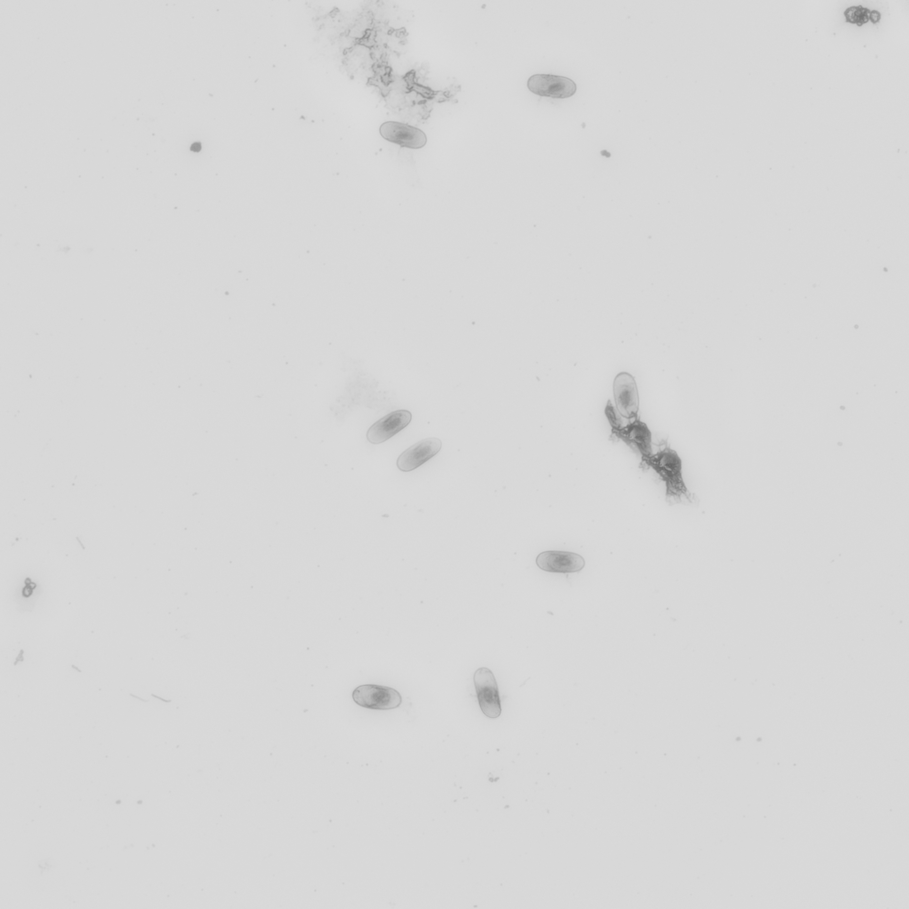
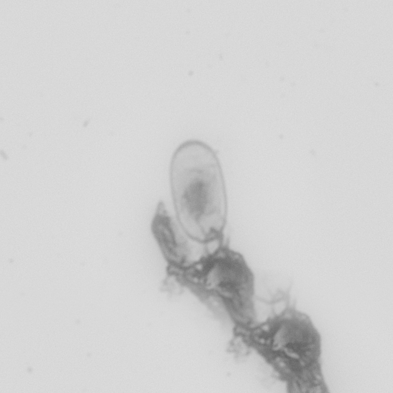
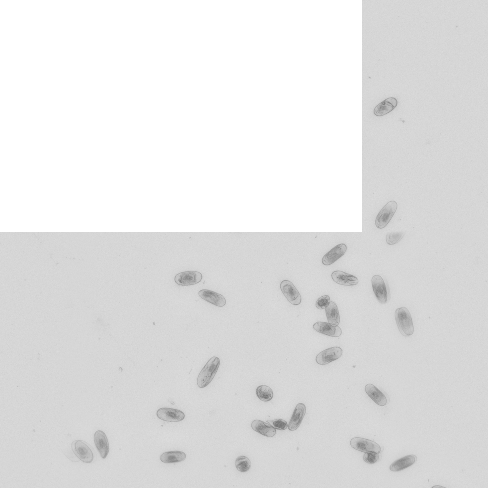
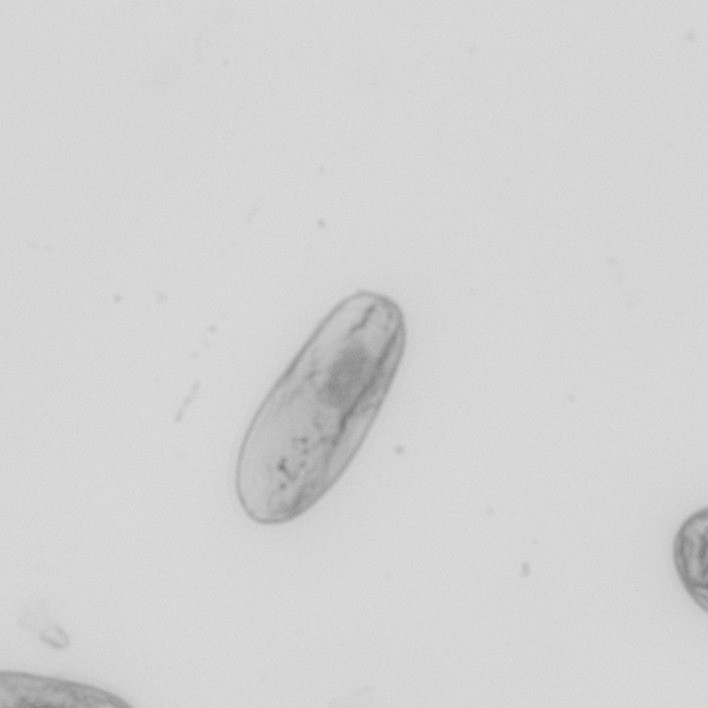
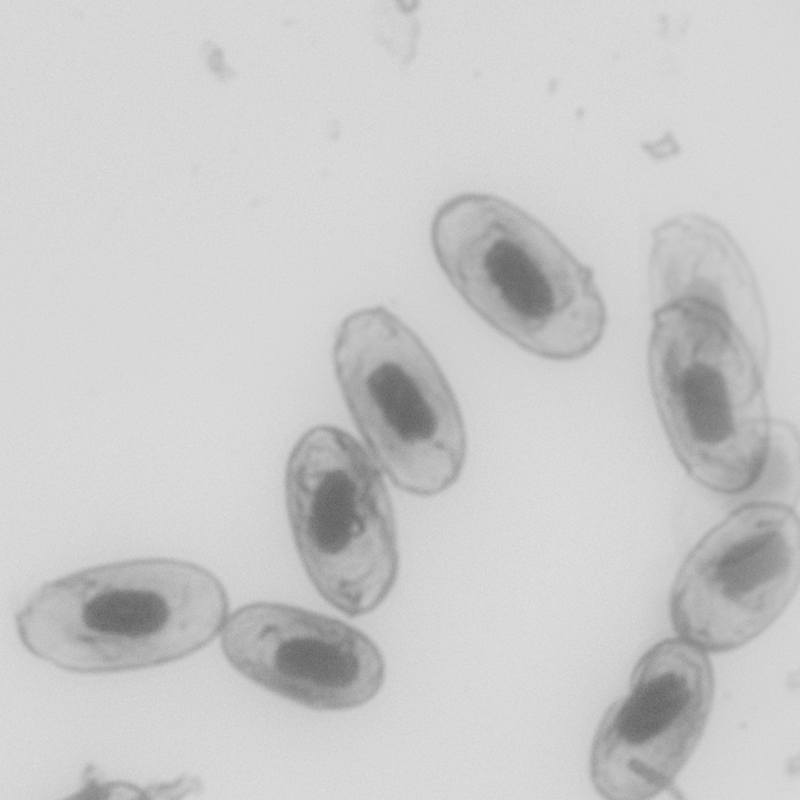

Process 413 · Specimen 32469
Glass slide 1321 · recorded scan directory 20250521


Retained green-channel images. Click an image to open its full resolution. No brightness, contrast, or color adjustment was applied.
Glass slide 1321 · recorded scan directory 20250521


Glass slide 1322 · recorded scan directory 20250521


Author-confirmed 40× brightfield target. 800 × 800 crop around the first retained nucleus.
